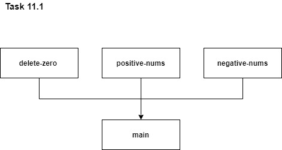
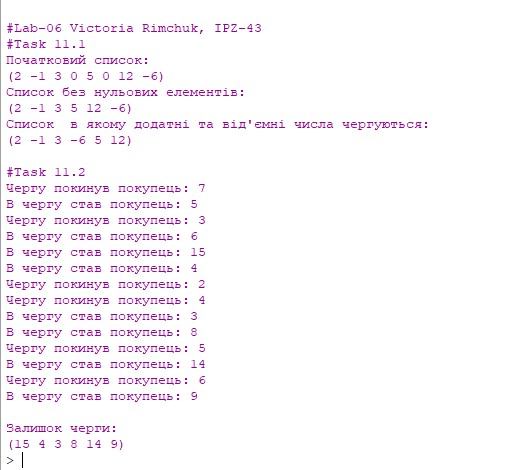

Лабораторна робота №6
Тема: Обробка структур типу векторів і матриць, стеків та черг мовами функціонального програмування
Завдання:
11.1.Створити вектор чисел з додатними, від’ємними та нульовими елементами. Видалити з вектору всі нульові елементи. Решту елементів розмістити так, щоб додатні і від'ємні елементи чергувалися. Надрукувати вектор до та після переміни.
11.2У магазині стоїть черга з n покупців. Заданий час обслуговування покупця з черги у вигляді цілого числа в діапазоні від 1 до t1, та час додавання нового покупця до черги – це ціле число в діапазоні від 1 до t2. Промоделювати стан черги (тобто показати час виникнення подій - обслуговування та додавання покупця) за період часу T (T>t1, T>t2). Вивести на екран залишок черги.
Опис алгоритму для завдання 11.1:
1. Створюємо функцію, яка повертає список із ненульових елементів
2. Створюємо функцію, яка повертає список із додатних елементів
3. Створюємо функцію, яка повертає список із від'ємних елементів
4. Створюємо функцію, яка повертає новий список, в якому додатні та від'ємні числа чергуються'
5. Задаємо початковий список у змінну my-list
6. Задаємо функцію not-zero-list, в яку передаємо функцію, що повертає список із ненульових елементів
7. Задаємо функцію pos-nums, в яку передаємо функцію, що повертає список із додатних елементів
8. Задаємо функцію neg-nums, в яку передаємо функцію, що повертає список із від'ємних елементів
9. Задаємо функцію reslt, в яку передаємо функцію, що повертає список, в якому додатні та від'ємні елементи чергуються
10. Виводимо результат на екран
Опис алгоритму для завдання 11.2:
1. Підключаємо бібліотеку для генерування випадкових чисел
2. Оголошуємо , чи є чега порожньою
3. Створюємо функцію доступу до першого елементу черги
4. Створюємо функцію доступу до останнього елементу черги
5. Створюємо функцію для додавання нового елементу в чергу
6. Створюємо функцію для видалення елементів з черги
7. Створюємо функцію, яка перетворює список елементів в чергу
8. Створюємо функцію, яка запускає процес обслуговування покупців у черзі
9. Задаємо час для моделювання черги T=30
10. Створюємо функцію покупців, викликавши з неї функцію для створення черги
11. Задаємо початкову чергу
12. Запускаємо процес обслуговування покупців для даної черги з виведенням кожної ітерації на екран
13. Відображаємо залишок черги
Структура програми (HIPPO діаграма):
.jpg)
Обгрунтування вибору середовища та мови
В якості середовища було обрано DrRacket версії 8.2 та мова Racket
Вибір середовища та мови був зумовлений наступним:
Код програми:
; #Task 11.1
(display "\n#Lab-06 Victoria Rimchuk, IPZ-43")
(newline)
; Функція, яка повертає список із ненульових елементів
(define (delete-zero nums)
(if (not (null? nums))
(append (if (= (car nums) 0) '() (list (car nums)))
(delete-zero (cdr nums)))
'()))
; Функція, яка повертає список із додатних елементів
(define (positive-nums nums)
(if (not (null? nums))
(append (if (< (car nums) 0) '() (list (car nums)))
(positive-nums (cdr nums)))
'()))
; Функція, яка повертає список із від'ємних елементів
(define (negative-nums nums)
(if (not (null? nums))
(append (if (> (car nums) 0) '() (list (car nums)))
(negative-nums (cdr nums)))
'()))
; функція,яка повертає новий список, в якому додатні та від'ємні числа чергуються
(define (main nums1 nums2)
(if (or (not (null? nums1))
(not (null? nums2)))
(append
(append
(if (not (null? nums1)) (list (car nums1)) '())
(if (not (null? nums2)) (list (car nums2)) '()))
(main (if (not (null? nums1)) (cdr nums1) nums1)
(if (not (null? nums2)) (cdr nums2) nums2)))
'()))
(define my-list (list 2 -1 3 0 5 0 12 -6))
(define not-zero-list (delete-zero my-list))
(define pos-nums (positive-nums not-zero-list))
(define neg-nums (negative-nums not-zero-list))
(define result (main pos-nums neg-nums))
(display "#Task 11.1\n")
(display "Початковий список:")
(newline)
(display my-list) (newline)
(display "Список без нульових елементів:")
(newline)
(display not-zero-list)
(newline)
(display "Список в якому додатні та від'ємні числа чергуються:")
(newline)
(display result)
(newline)
; Task 11.2
(#%require srfi/27)
;Оголошення черги
(define (make-queue)
(define p (cons '() '() ) )
(cons p p)
)
;Перевірка, чи є черга порожньою
(define (null-queue? q)
(and
(eq? (front q) (rear q)) (eq? (car (front q)) '() ))
)
;доступ до першого елемента черги
(define (front q)
(car q))
;доступ до останнього елемента черги
(define (rear q)
(cdr q))
;додавання нового елемента в чергу
(define (push q e)
(define p (cons e '()))
(if (null-queue? q)
(begin
(set-car! q p)
(set-cdr! q p))
(begin
(set-cdr! (rear q) p)
(set-cdr! q p))))
;видалення елемента з черги
(define (pop q)
(define x 0)
(if (null-queue? q)
'Empty ;==== виведення повідомдення про порожню чергу
(if (and (eq? (front q) (rear q)) (eq? '() (cdr (front q))))
(begin
(set! x (car (front q)))
(set-car! (front q) '() )
x )
(begin
(set! x (car (front q)))
(set-car! q (cdr (front q)) )
x))))
; функція, яка перетворює список елементів в чергу
(define (list->qu qu my-list)
(if (not (null? my-list))
(begin
(push qu (car my-list))
(list->qu qu (cdr my-list)))))
(define (run qu T x1 x2)
(define t1 5)
(define t2 6)
(if (and (not (null? qu))
(> T 0))
(begin
(if (= x1 0)
(begin
(display "Чергу покинув покупець: ")
(display (pop qu))
(newline)))
(if (= x2 0)
(let ((new-customer (random-integer 20)))
(display "В чергу став покупець: ")
(display new-customer)
(newline)
(push qu new-customer)))
(run qu
(- T 1)
(if (= x1 0)
(+ 1 (random-integer t1))
(- x1 1))
(if (= x2 0)
(+ 1 (random-integer t2))
(- x2 1))))))
(define T 30)
(define customers (make-queue))
(list->qu customers (list 7 3 2 4)) ; задаємо початкову чергу
(display "\n#Task 11.2\n")
(run customers T 2 3)
(display "\nЗалишок черги:\n")
(display (car customers))
Скріншот результатів:
Аналіз достовірності результатів:
11.1 Оскільки, завдання полягало у реалізації базових операцій роботи з векторами (видалення, сортування) перевірку на достовірність було проведено за допомогою візуальної оцінки вектору після кожної дій над ним. На мою думку, дане завдання не потребує додаткових перевірок на достовірність.
11.2 Для даного завдання, аналогічно із попереднім, перевірку на достовірність було проведено за допомогою візуальної оцінки черги після кожної дій над нею. На мою думку, дане завдання не потребує додаткових перевірок на достовірність.
Висновки:
В ході виконання даної лабораторної роботи було опановано теоретичні основи обробки структур типу векторів і матриць, стеків та черг мовами функціонального програмування шляхом реалізації програм для вирішення завдань згідно варіанту.